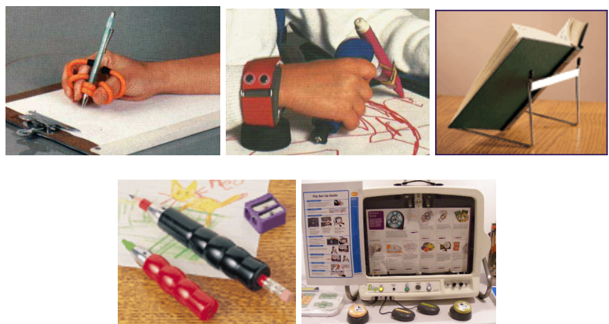
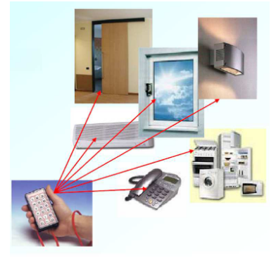
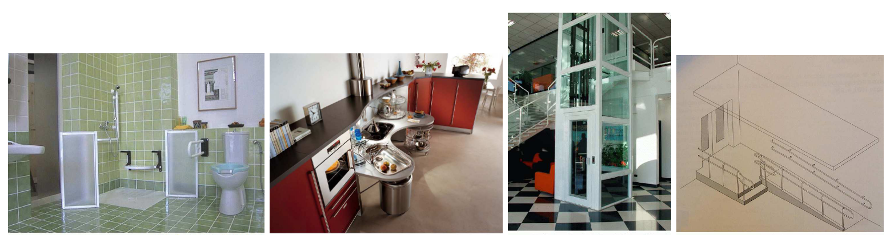

ARTIGO 01
LAZER E CONSUMO
A relação entre lazer e consumo é concebida por grande parte da produção acadêmica no Brasil a partir de uma perspectiva de que o mercado representa uma alternativa de fruição cultural marcada pela alienação e o consumo passivo, neste sentido, entende-se que a relação estabelecida entre o sujeito e o produto desta indústria cultural é determinada em última instância pelo produto e não pelo sujeito que consome essa pesquisa tem como objetivo discutir a relação entre lazer e consumo a partir da indústria cultural, buscando ressaltar o protagonismo dos sujeitos na dialética que se estabelece entre estas duas esferas. OS autores que tratam sobre o lazer, o consumo e a indústria cultural, no intuito de construir um ensaio que fosse capaz de instigar algumas perguntas e fomentar o debate acerca do tema. A pesquisa histórica da mercantilização do lazer no Brasil, Cleber Dias faz uma antítese ao que é hegemonicamente discutido no campo entre lazer e mercado, a análise do cenário em que a relação que se estabelece entre lazer e sociedade é dialética, ou seja, a mesma sociedade que o gerou, e exerce influências sobre o seu desenvolvimento, também pode ser por ele questionada, na vivência de seus valores. Ao fomentar o debate acerca do lazer e o consumo através da indústria do entretenimento. Nota-se que ainda há em meio aos teóricos do campo do lazer uma tendência em analisar o chamado “mercolazer” a partir de uma perspectiva majoritariamente pejorativa, visto que a noção de indústria cultural está enraizada, mesmo que implicitamente, no debate acadêmico acerca do tema. O objetivo foi levantar todas as questões que envolvem a relação entre o lazer e o consumo, de maneira oposta.
ARTIGO 02
O USO DAS TECNOLOGIAS NA EDUCAÇÃO COMO FERRAMENTAS DE APRENDIZADO
Esse pesquisa busca relatar a importância das tecnologias na educação e o que ela traz de mudanças, o principal objetivo e elencar resumidamente os benefícios que o uso da tecnologia em sala de aula pode promover, bem como relatar quais os desafios os docentes precisam superar mesmo com a conscientização de diversas classes que atuam direta e indiretamente na educação, o objetivo geral da pesquisa é identificar os pontos positivos da aplicação da tecnologia na educação, a ponto que se possa definir, se este método é realmente eficaz, e se o conteúdo é absorvido pelo indivíduo da mesma maneira que é absorvido na forma convencional de ensino. Quando a tecnologia e utilizada na sala de aula permite nivelar o aprendizado entre todos os alunos para se tornar más simples para respeitar o ritmo de aprendizagem de cada um, o professor pode oferecer uma aula na qual o aluno participa ativamente. A integração da tecnologia no âmbito educacional permitiu a criação de novos métodos e modalidades de ensino, de forma, a atender os mais diversos estilos de discentes, auxiliando na interação do professor com o aluno, e possibilitando um aprendizado alternativo. A integração da tecnologia na educação permite que os professores desenvolvam novos métodos de ensino para auxiliar os alunos.
ARTIGO 03
INTRODUÇÃO À TECNOLOGIA ASSISTIVA
Tecnologia Assistiva (TA) é um termo relativamente recente utilizado para descrever uma variedade de recursos e serviços que têm como objetivo ajudar a melhorar ou ampliar as habilidades funcionais de pessoas com deficiência. O objetivo final da Tecnologia Assistiva é promover a independência e inclusão dessas pessoas, oferecendo-lhes as ferramentas necessárias para uma vida mais autônoma e participativa, esse estudo foi feito para propagar o conhecimento sobre as tecnologias assistivas e como elas são criadas, por meio dessa pesquisa concluice que e muito importante difundir informações sobre Tecnologia Assistiva e como conseguir ela para as escolas publicas.



